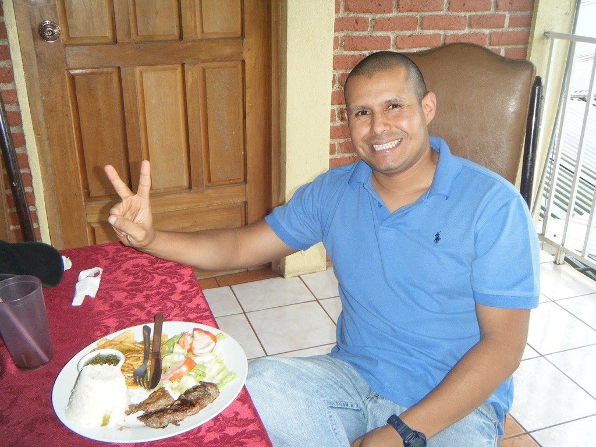

BORIS GUERRERO REYES
Hello! My name is Boris, and I am a dedicated Full Stack Software Developer professionally certified by IBM. As a veteran of the US military, I bring discipline, commitment, and a strong work ethic to my role in the tech industry. I have a deep passion for developing apps and websites, and I take immense pride in crafting elegant and efficient code.
My journey into software development is fueled by a love for coding in general and a specific interest in AI, which I hope to further explore by obtaining an AI certification from IBM in the near future. Currently, I enjoy working on diverse projects, from creating seamless user experiences with HTML and CSS to building robust back-end systems.
In addition to my tech pursuits, I am also a recreational pilot with a commercial pilot license. Exploring the skies in my off time brings me a sense of freedom and adventure that complements my analytical mindset.
Beyond my professional life, I am a family man, happily married, and enjoy spending quality time with my loved ones. In my free time, I like playing P3D, working out, traveling, and relaxing at the beach. I also have a penchant for fast food and snacks!
I believe that my varied experiences and interests contribute to a well-rounded approach to problem-solving and innovation in software development. I am excited about the future and the opportunities to make meaningful contributions to the tech industry.